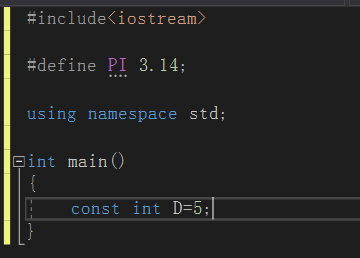

常量：
在C++中有许多种数据类型（如int，float，bool等等）。而这些数据类型又可以声明定义出变量与常量两种不同的具体数据。它们两种分类的标准是不一样的，是两个角度可以叠加的分类，举个栗子：int说明这是个整数，变量x说明这个可变的数（数学中的未知数）,两者叠加就是一个整数的未知数（在一个不透明箱子里有多少个球，这个数目是未知的，但是它一定是个整数，不存在半个球）。
对于常量与变量，它们在C++(vs)中的定义方式是不同的。我们声明一个变量只需要写 int x，float y（x,y在数学中也表示未知数）即可。然后对x和y进行赋值，x=10，y=1.000。一般情况下我们声明的都是变量，变量的值在程序中是可以发生改变的，因为是变量嘛。
而常数的声明则需要const关键字或者#define。常数一旦声明就无法改变，如PI就是3.14，不可以对它进行加减乘除运算（这与数学上是一致的，圆周率就是3.14不可更改，这个数据引进到编程语言中就是常量），所以，对D++运算是不允许的，违反逻辑（你在生活中也无法对圆周率进行修改吧）

#define与const的区别：
由上图#define定义时没有数据类型，只是定义一个常数，在进行运算时不会进行相应检查，可能出现错误。 而const后面带有数据类型，实质上还是个float数据，占用数据段空间。
最重要的一点：#define只是一个数据替换，在需要它的时候对数据进行替换
#define N 2+3 //我们预想的N值是5，我们这样使用N
double a = N/2; //我们预想的a的值是2.5，可实际上a的值是3.5
而造成这个问题的原因就是在N/2时，对N进行了一个替换展开，称为2+3,所以最后运算结果为2+3/2=3.5
引用：
引用就是某一变量（目标）的一个别名，对引用的操作与对变量直接操作完全一样。所谓别名简单理解就是人们的大名与小名一样。
引用的声明方法：类型标识符 &引用名=目标变量名；
int a=10;
int &ra=a; //定义引用ra,它是变量a的引用，即别名。注意：声明引用时，必须同时对其进行初始化。